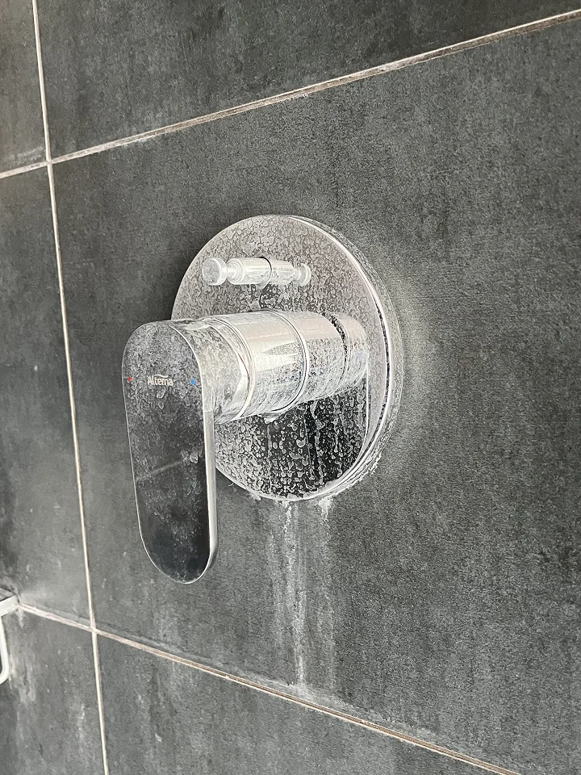
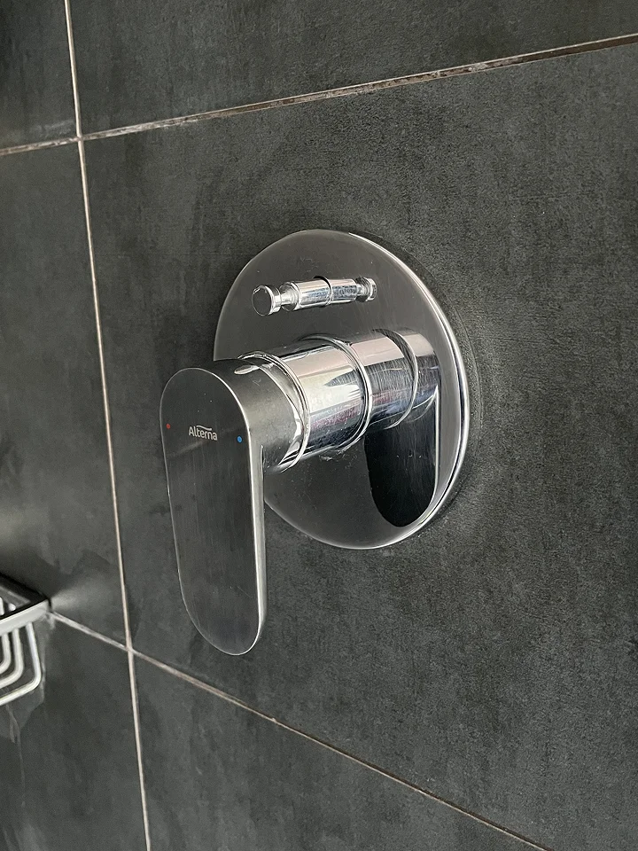
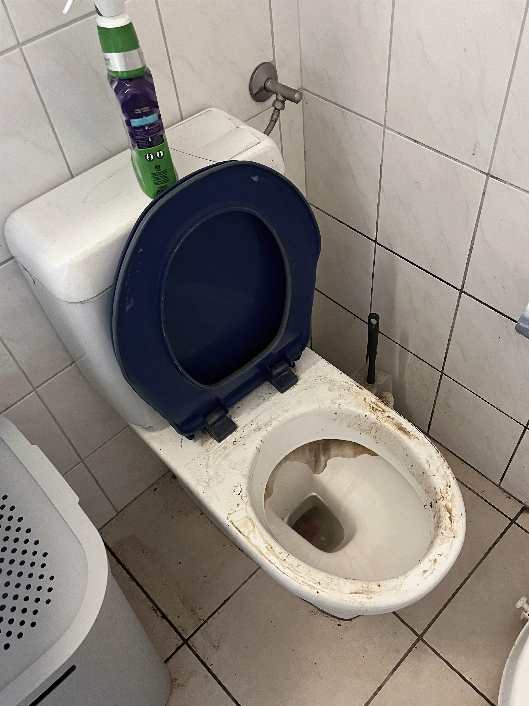
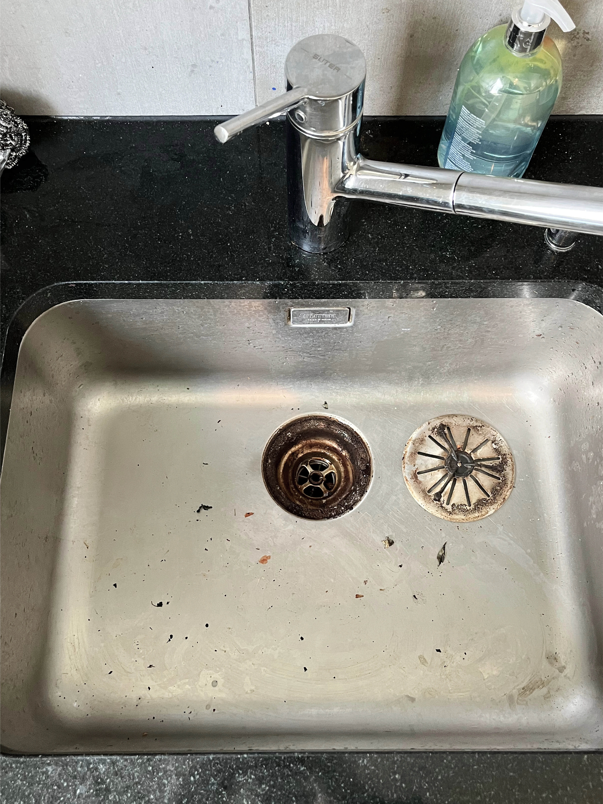
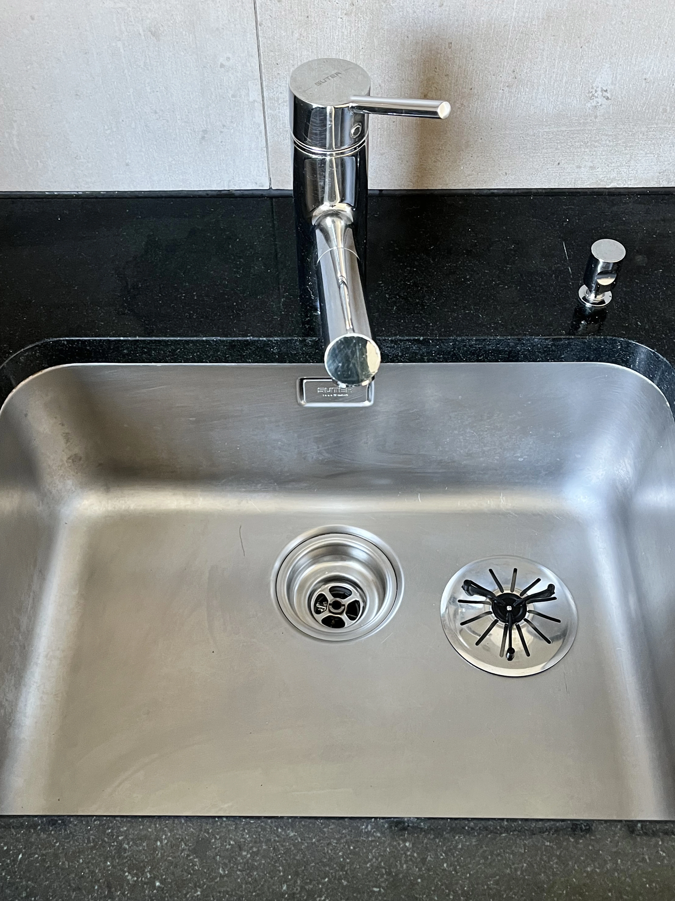

Retrouvez un espace impeccable, sans stress et en toute confiance !
Déménagez sereinement, nous respectons les exigences des gérances.
💡 Conformes aux exigences des régies — satisfait ou refait
Des espaces impeccables, sans stress ni effort, pour particuliers et professionnels.
Offrez-vous la luminosité d’un intérieur propre sans lever le petit doigt.
Après chantier ou rénovation, retrouvez vos espaces propres immédiatement.
Des valeurs humaines, proches de vous
Présents à vos côtés, dans votre région
80% de produits écologiques et sans danger
Disponibles 7j/7 pour vous
Avant notre passage
Après notre passage
Avant notre passage
Après notre passage

Avant notre passage
Après notre passage
Nettoyage fin de chantier
Nous avons fait appel à Malo Nettoyage, lors d'une fin de chantier pour un local commercial. Rapidité du devis et prestations réalisées avec professionalisme et dans les temps. Je recommande vivement cette entreprise
Nettoyage de fin de bail
Nous avons eu recours à Malo Nettoyage pour le nettoyage complet de notre appartement à vendre. Super professionnels, nettoyage de très grande qualité, rapides, disponibles et fiables. Je recommande les yeux fermés !
Nettoyage régulier
Cela fait presque 3 mois que Malo Nettoyage s’occupe du ménage chez mes grands-parents, et c’est un vrai soulagement pour nous. Leur équipe est incroyable. Respectueuse, discrète, toujours souriante et prête à aider, même pour déplacer des meubles sans rien demander en retour. Mes grands-parents se sentent écoutés et respectés, et c’est vraiment précieux. Merci à toute l’équipe. Nous vous recommandons les yeux fermés !
Nettoyage de fin de bail
Nettoyage de fin de bail effectué par Malo Nettoyage. Etat des lieux passé sans problème. Prix plus que correct. Très bien, merci beaucoup.
Nettoyage vitres et sols
J’ai fais appel à l’entreprise Malo Nettoyage pour les vitres et sols de ma maison , et j’en suis 100% satisfaite . Travail rapide et efficace , ils m’ont donné entière satisfaction. Personnel chaleureux et à l’écoute.
Nettoyage fin de bail
Un immense merci! J'ai été entièrement satisfaite par vos services de nettoyage de fin de bail : Professionnalisme, efficacité, propreté et rapidité, - et ce malgré la grande charge de travail qu'il y'avait à faire - vraiment au top! Je recommande à 100% et vous recontacterais sans hésiter pour d'autres services à l'avenir. 🙏🏼
Nettoyage entreprise
Excellent suivi clientèle. Toujours le même interlocuteur. Travail professionnel, personnel motivé, objectif fixé pour chaque intervention, horaires respectés. En cas de nécessité le personnel est dévoué pour tout autre aide. Nous recommandons vivement cette entreprise qui travaille actuellement pour nous.
Nettoyage fin de bail
Au top mon appartement étais dans un sale etat tout a bien pu être rattraper merci infiniment efficace et super sympathique 👍☺️
Nettoyage vitres
On vous remercie infiniment pour votre travail et gentillesse de chacun. Respectueux et avenant, rapide. Bravo à tous !
Pendant mes études, j’aidais mon frère, agent de propreté CFC, et j’ai découvert un métier exigeant mais passionnant.
Après ma formation, nous avons uni nos compétences :
👉 Lui, 10 ans sur le terrain
👉 Moi, 2 ans à ses côtés
C’est ainsi qu’est née Malo Nettoyage, une entreprise familiale basée sur la qualité et la confiance.
Oui, nous offrons une flexibilité totale jusqu'à 24h avant l'intervention.
Nos tarifs sont clairs et sans frais cachés. Vous obtenez un devis avant toute intervention.
Absolument. Nos intervenants sont sélectionnés rigoureusement et évalués après chaque mission.